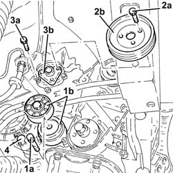
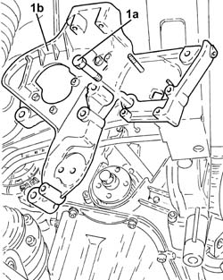
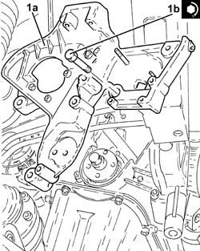
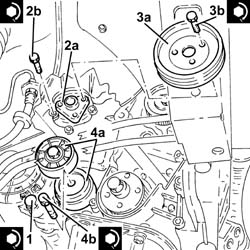

4130B32 POWER STEERING PUMP MOUNT - R R
- Path
- Procedures > 41 STEERING UNIT > 4130 POWER STEERING > 4130B POWER STEERING HYDRAULIC SYTEM > 4130B32 POWER STEERING PUMP MOUNT - R R
- Kind
- repair procedure (removal / refitting; the operation number is the code)
- Applies to
- engines: 1.9 JTD 16V; all production periods
- Interactive page
- https://sloeber94.github.io/elrnDB-aGt/en/#/125001411
Applies to: engines: 1.9 JTD 16V; all production periods
 Removing
Removing
 Refitting
RefittingPosition the vehicle on the ramp
Ensure that the ignition key is in the OFF position, then disconnect the negative battery terminal (-).
Name | Connector | |
|---|---|---|
- | Battery |
Proceed with removal
Op. 1008C10 POWER UNIT UPPER REACTION LINK R R
Proceed with removal
Proceed with removal
Op. 1060G80 DS ELECTRIC INJECTION CONTROL UNIT - R R
Proceed with removal
Proceed with removal
Op. 4450B04 RIGHT FRONT WHEEL R R
Proceed with removal
Proceed with removal
Op. 7055B54 UNDER-ENGINE GUARD - R R
Proceed with removal
Proceed with removal
Op. 7055B91 RIGHT FRONT WHEEL ARCH LINER - R.R.
Proceed with removal
Proceed with removal
Op. 1092G10 SINGLE ENGINE BELT R R
Proceed with removal
Proceed with removal
Op. 1092A10 CRANKSHAFT SERVICES PULLEY - R.R.
1. Undo the bolt (1a) and remove the single drive belt tensioner (1b).
2. Undo the bolts (2a) and remove the power assisted steering pump drive pulley (2b).
Op. 1092G20 ENGINE COMPONENT SINGLE BELT FIXED TENSIONER - ONE - R + R
3. Undo the bolts (3a) and move the power assisted steering pump (3b) backwards in relation to the support.
4. Undo the bolts fixing the alternator and move it back.
Op. 1032D12 TIMING SYSTEM PROTECTIVE COVER(S) - R + R
Op. 1032B10 TOOTHED TIMING BELT - R + R FOR TIMING ADJUSTMENT OR REPLACEMENT
Op. 1032C10 MOVING TIMING TENSIONER - R.R. WITH TIMING BELT/CHAIN REMOVED
Op. 1032C30 FIXED TIMING SYSTEM TENSIONER - R + R WITH TIMING BELT REMOVED
Op. 1084A16 OIL DIP STICK PIPE - R R

Applies to: engines: 1.9 JTD 16V; all production periods
1. Undo the bolts (1a) and remove the power assisted steering pump support (1b).

Applies to: engines: 1.9 JTD 16V; all production periods
Refitting
Removing1. Place the power assisted steering pump mounting (1a) back in its housing and fix it tightening the bolts (1b) to the recommended torque.
 | Fastening | Component | Ø | Value (daNm) |
|---|---|---|---|---|
1b | Bolt | POWER STEERING PUMP SUPPORT/BRACKET | M8 | (Engine crankcase side) 2.3 ÷ 2.8 |
| Fastening | Component | Ø | Value (daNm) |
|---|---|---|---|---|
1b | Bolt | POWER STEERING PUMP SUPPORT/BRACKET | M10 | (Crankcase side) 4.5 ÷ 5.5 |

Applies to: engines: 1.9 JTD 16V; all production periods
1. Place the alternator back in its housing and tighten the bolts to the recommended torque.
| Fastening | Component | Ø | Value (daNm) |
|---|---|---|---|---|
1 | Bolt | ALTERNATOR ASSEMBLY | M10 | 4.5 ÷ 5.5 |
| Fastening | Component | Ø | Value (daNm) |
|---|---|---|---|---|
1 | Bolt | ALTERNATOR ASSEMBLY | M12 | 6.3 ÷ 7.7 |
2. Place the power assisted steering pump (2a) back in its housing and secure it by tightening the bolts (2b) to the recommended torque.
| Fastening | Component | Ø | Value (daNm) |
|---|---|---|---|---|
2b | Bolt | POWER STEERING PUMP | M8 | (Support side) 2.3 ÷ 2.8 |
3. Place the power assisted steering pump drive pulley (3a) back in its housing and secure it tightening the bolts (3b) to the recommended torque.
| Fastening | Component | Ø | Value (daNm) |
|---|---|---|---|---|
3b | Bolt | POWER STEERING PUMP DRIVE PULLEY | M8 | (Power assisted steering pump side 23 28 |
4. Place the engine components single drive belt moving tensioner (4a) back in its housing and fix it tightening the bolt (4b) to the recommended torque.
| Fastening | Component | Ø | Value (daNm) |
|---|---|---|---|---|
4b | Bolt | SINGLE SERVICES MOBILE BELT TENSIONER | M8 | 2.3 ÷ 2.8 |

Applies to: engines: 1.9 JTD 16V; all production periods
Proceed with refitting
Op. 1084A16 OIL DIP STICK PIPE - R R.
Proceed with refitting
Op. 1032C30 FIXED TIMING SYSTEM TENSIONER - R + R WITH TIMING BELT REMOVED.
Proceed with refitting
Op. 1032C10 MOVING TIMING TENSIONER - R.R. WITH TIMING BELT/CHAIN REMOVED.
Proceed with refitting
Op. 1032B10 TOOTHED TIMING BELT - R + R FOR TIMING ADJUSTMENT OR REPLACEMENT.
Proceed with refitting
Op. 1032D12 TIMING SYSTEM PROTECTIVE COVER(S) - R + R.
Proceed with refitting
Op. 1092G20 ENGINE COMPONENT SINGLE BELT FIXED TENSIONER - ONE - R + R.
Proceed with refitting
Op. 1092A10 CRANKSHAFT SERVICES PULLEY - R.R..
Proceed with refitting
Op. 1092G10 SINGLE ENGINE BELT R R.
Proceed with refitting
Op. 7055B91 RIGHT FRONT WHEEL ARCH LINER - R.R..
Proceed with refitting
Op. 7055B54 UNDER-ENGINE GUARD - R R.
Proceed with refitting
Op. 4450B04 RIGHT FRONT WHEEL R R.
Proceed with refitting
Op. 1060G80 DS ELECTRIC INJECTION CONTROL UNIT - R R.
Proceed with refitting
Op. 1008C10 POWER UNIT UPPER REACTION LINK R R.
Connect the negative (-) battery terminal
Remove the car from the ramps.
Topics linked from this page (14)
- 1008C10 POWER UNIT UPPER REACTION LINK R R
- 1032B10 TOOTHED TIMING BELT - R + R FOR TIMING ADJUSTMENT OR REPLACEMENT
- 1032C10 MOVING TIMING TENSIONER - R.R. WITH TIMING BELT/CHAIN REMOVED
- 1032C30 FIXED TIMING SYSTEM TENSIONER - R + R WITH TIMING BELT REMOVED
- 1032D12 TIMING SYSTEM PROTECTIVE COVER(S) - R + R
- 1060G80 DS ELECTRIC INJECTION CONTROL UNIT - R R
- 1084A16 OIL DIP STICK PIPE - R R
- 1092A10 CRANKSHAFT SERVICES PULLEY - R.R.
- 1092G10 SINGLE ENGINE BELT R R
- 1092G20 ENGINE COMPONENT SINGLE BELT FIXED TENSIONER - ONE - R + R
- 4450B04 RIGHT FRONT WHEEL R R
- 7055B54 UNDER-ENGINE GUARD - R R
- 7055B91 RIGHT FRONT WHEEL ARCH LINER - R.R.
- A1B Battery ( BATTERY NEGATIVE )